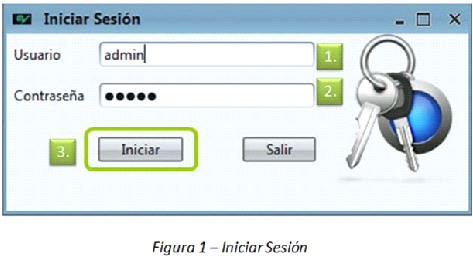

|
Inicio sesión
|
Top Next |
Inicio de Sesión
Al iniciarse el sistema, la primera pantalla en presentarse es la de autenticación de usuario, la cual permite el acceso sólo a aquellas personas autorizadas y con diferentes privilegios.
En esta pantalla el usuario debe ingresar su Nombre de Usuario y Clave.
A continuación se debe presionar el botón “Iniciar” tal como se muestra en la figura 1.

Se debe ingresar el nombre de usuario (1.) y a continuación se debe ingresar la contraseña correspondiente (2.) lo cual permite, luego de presionar el botón “Iniciar” (3.), acceder al sistema solo a los usuarios autorizados.